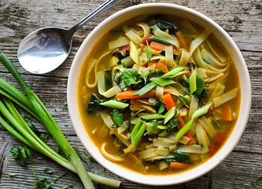

Thukpa

Description
Thukpa is a Ladakhi soup or stew. You can experiment with multiple combinations of ingredients.
Ingredients
- Wholemeal wheat flour
- Vegetable mixture (carrots, broccoli, spinach, peas, corns, scallions, mushrooms, cheese curd, etc.)
- AND if you prefer non-vegetarian, small chunks of mutton
- Corn starch (optional)
- Salt and black pepper
- Coriander
Steps
- Knead the dough. Do not add anything before kneading. Set it aside.
- In a deep pan, boil and cook all the vegetable mixture (If you want to add mutton also, semi cook it before).
Add enough water, so that it doesn't dry up while cooking.
- Add salt, black pepper, and corn starch.
- Roll the dough on a flat surface. You can cut it in shape of long flat noodles or small diamond shapes.
- Once the vegetable mixture is cooked, add the dough and cook until done.
- Serve hot. A multitude of ingredients, makes thukpa a very nutritious food and people mostly consume it during cold winter nights.
Home